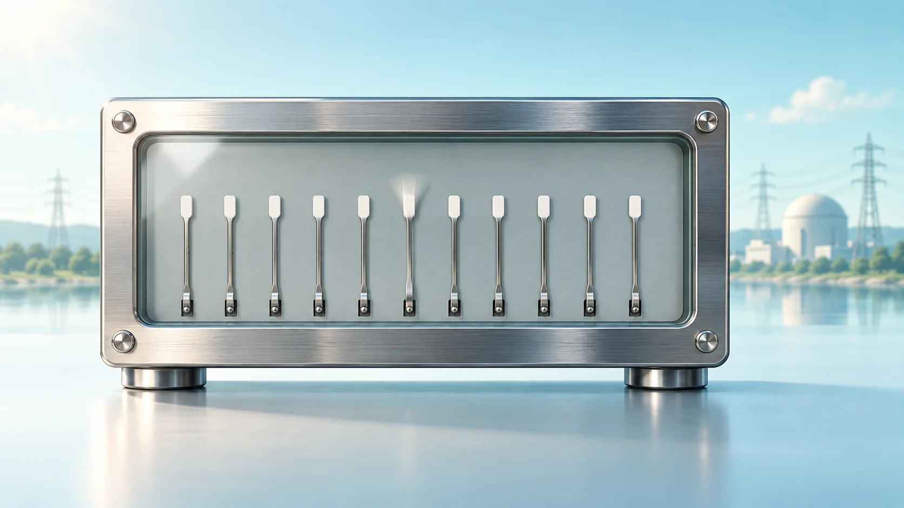
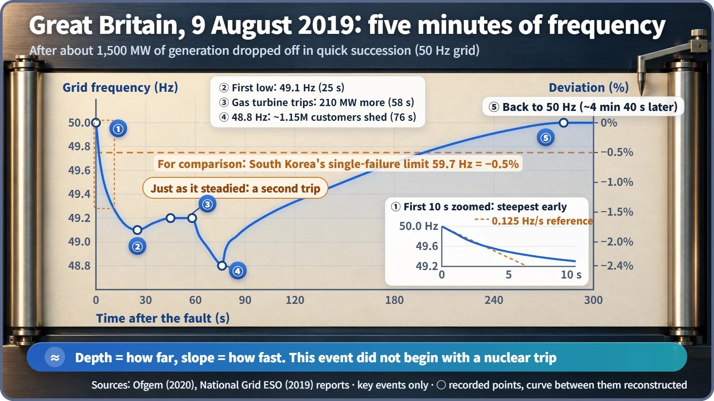
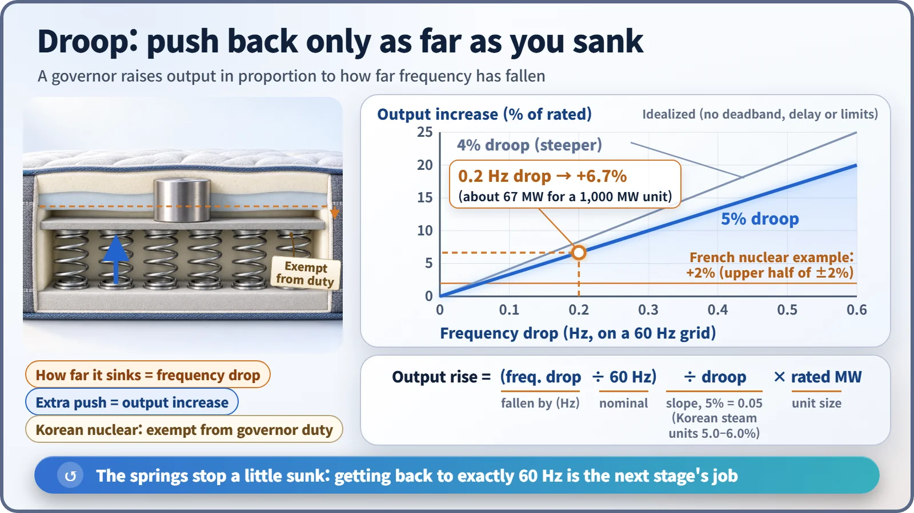

Plant Operation, Control & the Grid · 247
The Hum in a Recording Knows What Time It Is — Grid Frequency Control and Nuclear Power
Grid frequency is a needle that shows how far supply and demand have tipped. Governors answer in proportion; whether nuclear joins in is a national choice.

Grid frequency is the common spinning speed of every large generator, so it falls whenever demand outruns supply. Governors push output up in proportion to the drop (droop), arresting the fall. Whether nuclear plants join in is a choice each country makes: South Korea's grid code allows them to be exempt, while French plants take part within ±2% of rated power. [4]
The hum that knows the time
Forensic science has a curious technique. A recording made near a power outlet picks up a faint electrical hum, and the pitch of that hum drifts up and down by tiny amounts. Match that drift against the grid's frequency records and you can pin down the date and time of the recording, and even spot where it was cut and spliced. It's called electrical network frequency analysis.
Isn't South Korea's electricity fixed at 60 Hz? Strictly speaking, it wobbles constantly around 60 Hz. So what does that wobble mean, and do nuclear plants take part in frequency control, the job of holding it steady?
When the needle shakes, something is short of power
Frequency is the speed at which every large generator connected to the grid spins together. When consumption exceeds generation, the shortfall is drawn from their rotational energy, so they all slow down a little and frequency drops. Frequency is therefore a gauge needle that tells you which way, and how far, the balance has tipped. The bigger the imbalance, and the lighter the spinning machinery, the faster it falls.
Normal wobbles are usually under 0.02 Hz. [5] But when a big generator suddenly drops off, the needle swings hard. Three numbers matter then: the rate of change of frequency (how many Hz it falls per second), the nadir (the lowest point), and the value where it settles again.
A Friday afternoon in Britain: a five-minute roller coaster
At 4:52 p.m. on 9 August 2019 in Great Britain (a 50 Hz grid), a lightning strike caused a fault on a transmission line. Within little more than a second, an offshore wind farm, a gas-fired power station and small generators dropped off, about 1,130 MW in total.
Frequency initially fell faster than 0.125 Hz per second, and protection devices that react to that rate of change tripped more small generators, swelling the loss to about 1,500 MW. The operator had prepared for 1,000 MW. After about 25 seconds, the control systems combined to stop the fall at 49.1 Hz, but about a minute later another gas turbine shut down and frequency was pushed down to 48.8 Hz at around 76 seconds. At that moment, automatic under-frequency load shedding cut power to about 1.15 million customers, and frequency was back at 50 Hz less than five minutes after the event began. This incident did not start with a nuclear plant tripping. [1] [2]

As a ratio, 48.8 Hz is 2.4% below nominal. South Korea's grid operating standard requires that even if the single largest generator trips, frequency must not fall below 59.7 Hz (a 0.5% drop), and must recover to 59.8 Hz within one minute. [3]
Like mattress springs: push back only as far as you sank
The star of stopping that fall is each generator's governor, a device that watches rotational speed and changes output. Its rule resembles a mattress. When someone sits down, the mattress sinks slightly, and every spring pushes back in proportion to how far it has sunk. The depth of the dip is the frequency drop; the push is the increase in output.
The slope of that relationship is called droop:
Output increase = (frequency drop ÷ 60 Hz) ÷ droop × rated output
A 5% droop means that if frequency falls by 5%, or 3 Hz, output rises by the full rated amount. For a generator rated at 1,000 MW, a 0.2 Hz drop calls for 0.2 ÷ 60 ÷ 0.05 × 1,000 ≈ 67 MW more. South Korea's standard sets droop at 5.0–6.0% for steam-turbine generators and 4.0–5.0% for gas turbines, and newly connected generators have a deadband: they ignore very small wobbles within 0.06% (0.036 Hz at 60 Hz). With equal droop, every generator sinks to the same depth, so bigger units pick up more in proportion to their rating. [3]

The springs don't lift the mattress all the way back to its original height. Their push comes from the depth of the dip, so it stops while still slightly sunk. Bringing frequency back to exactly 60 Hz is the job of the next stage, automatic generation control (AGC). [6]
South Korean nuclear plants are "exempt from extra duty"
South Korea's operating standard attaches the same proviso to both its droop clause and its automatic frequency control clause: "nuclear generators may be exempted." [3] In mattress terms, they are springs excused from extra pushing. The reason usually given is headroom. To raise output when frequency falls, a plant has to run slightly below its rating in normal times, and for a nuclear plant that runs steadily near full power, that means giving up generation. Separate fast-responding gas turbines, pumped hydro and batteries are also part of why roles are divided this way.
In fact, as the single largest generator, a nuclear unit can end up setting the standard. According to press reports, when demand fell to about 41 GW during a May 2020 holiday, there was concern that if either of the 1,400 MW-class Shin-Kori units 3 and 4 tripped, frequency could fall below 59.7 Hz, so each unit's output was reduced by 300 MW. [7]
French nuclear plants help push, too
French nuclear plants automatically adjust output within ±2% of rated power on a timescale of seconds to follow frequency, and also adjust within a ±5% range on signals from the grid operator. German nuclear plants took part as well, before Germany's nuclear phase-out. [4]
Inside the reactor, when the governor opens the steam valve a little more, the coolant is cooled more; because the reaction becomes slightly more active as temperature falls, reactor power rises to follow. Around ±2% is no great burden for the reactor, and it is a different scale from load following, where output swings by tens of percent over a day. As renewables grow, how to divide these roles becomes part of the puzzle of combining power sources on a grid.
| South Korea | France | |
|---|---|---|
| Governor droop duty for nuclear | May be exempted (grid code 13.0) | Takes part |
| Automatic frequency control | May be exempted (15.1.3) | Primary ±2%, secondary ±5% of rated power |
Key takeaways
A small dip in frequency does not mean a blackout is imminent. The deviation tells you how far the balance has tipped, and governors simply answer in proportion to it. Whether nuclear plants join that answer is less a limit of physics than a choice of roles each country makes. The quiver in the hum of a recording is proof that countless springs are pushing back, nonstop.